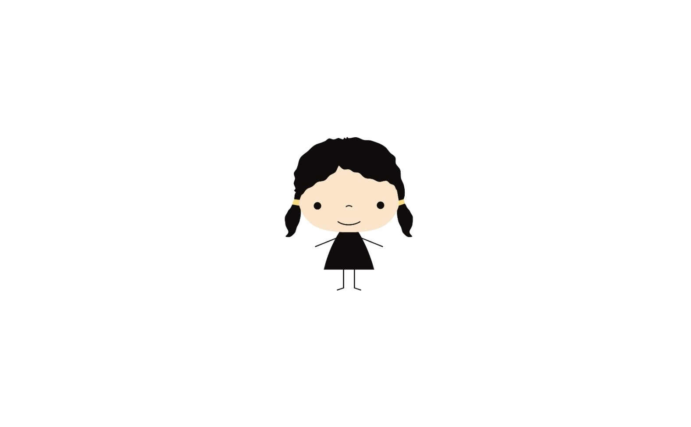

Latest Blogs
on
Media and
Politics
Politics Discovers the Masses
In the historical periods, the mob was nothing but unculturedness and riots.
Posted on November 07, 2022

on
Media and
Psychology
Psychology of the Crowd
In the vast crowd, the general public, and the ‘mass’ in mass media, where do
we stand? Where should we stand?
Posted on November 08, 2022

on
Media and
Culture
Metaphysics of the Mass Person
Are you familiar with the trope rags to riches? Have you ever dreamt of
experiencing that dramatic twist for once in your life? I did; and it came true for most of the
masses in the first third of the twentieth century.
Posted on November 09, 2022
on
Media and
Culture
Anti-theory: Mass Mediation as Culture
After all the talk of mass communication, society, social standings and
politics, one may lose hope with regards to the meaning of a true democracy– And what of the
current state of mass communication now? Don’t we all get a say too?
Posted on November 10, 2022

and
on
Media,
Politics, and
Culture
On Media, Social Order, and Cultural
Change
There is always a context to equate in every mass behavior; there is
psychology to unpack in this collectivity and its individuality within.
Posted on November 11, 2022